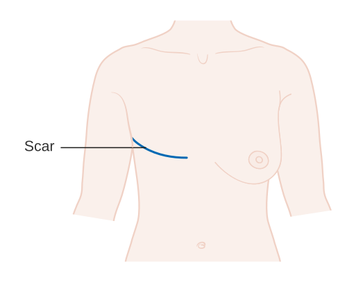
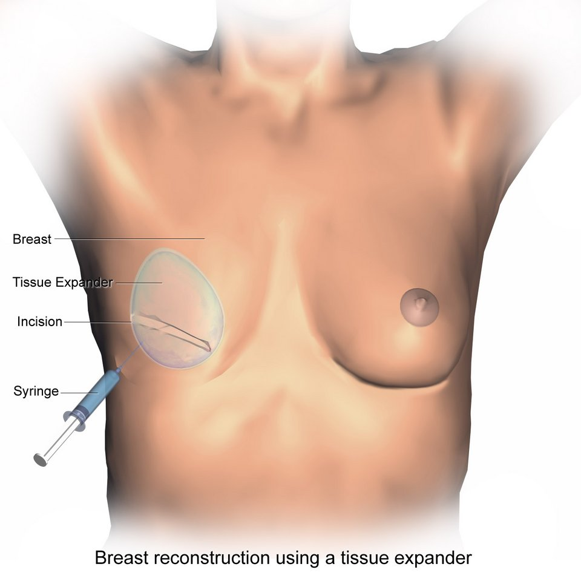
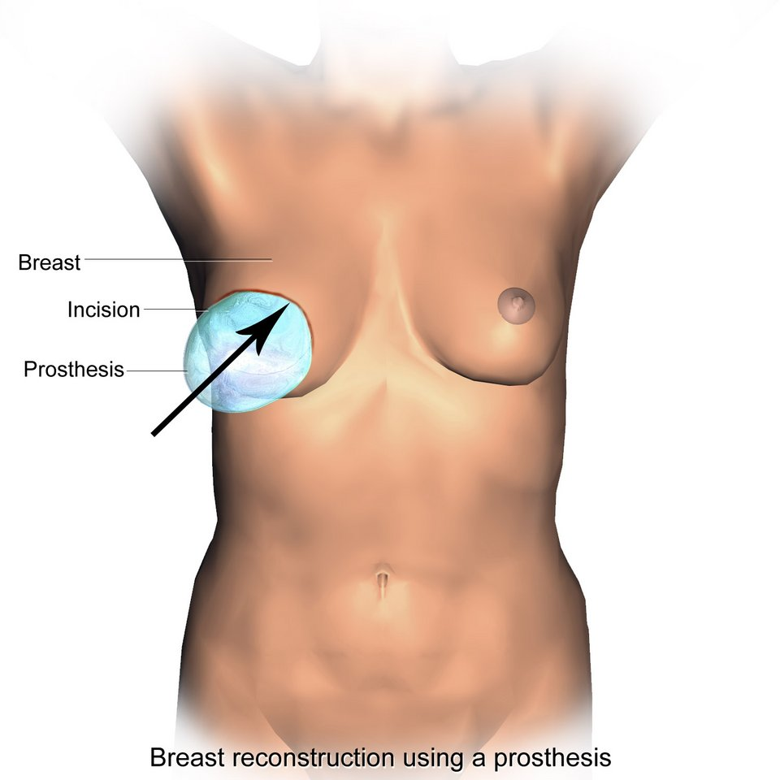
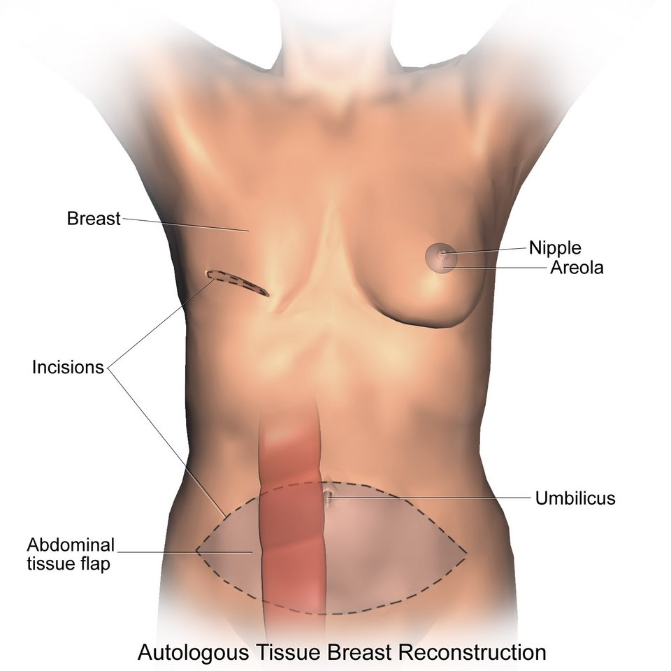
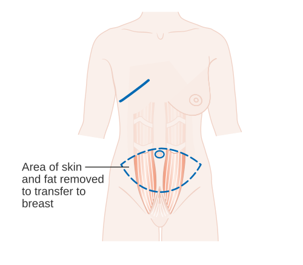
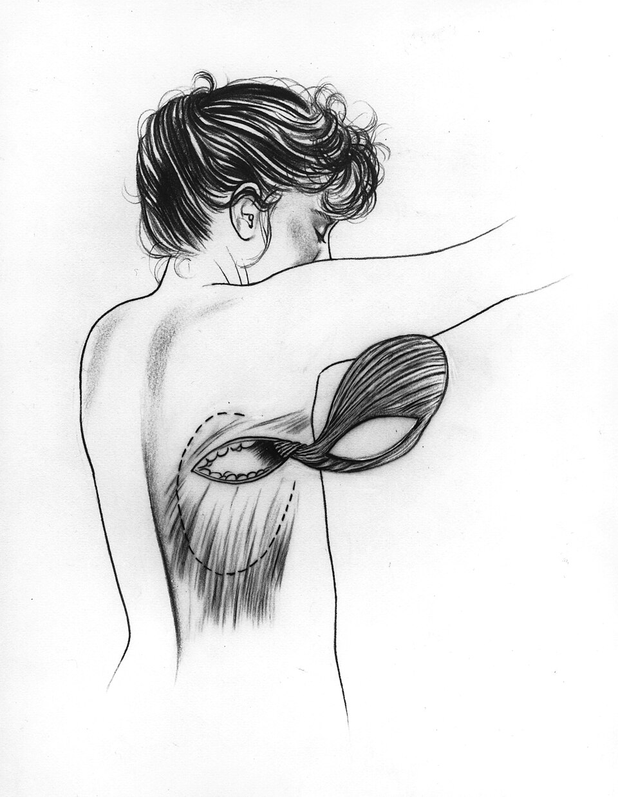
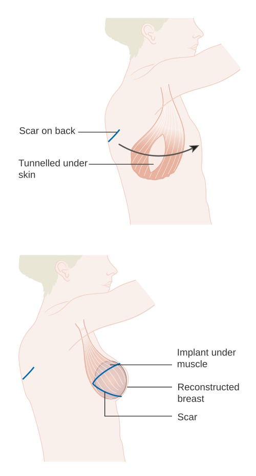
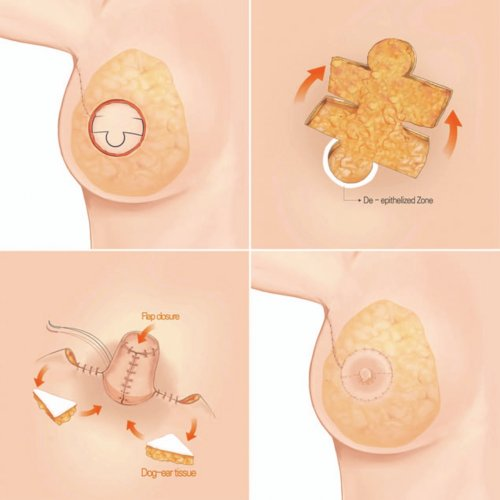

שחזורי שד
אחרי כריתה או שימור: תזמון, שתלים מול רקמה עצמית, אונקופלסטיקה ומה המטופלת מרגישה אחרי
בסוף המפגש תדעו
- למנות את האפשרויות אחרי כריתת שד: בלי שחזור, שתל, רקמה עצמית ושילוב ביניהם
- להסביר מתי משחזרים מיד ומתי מחכים ואיך הקרנה וטיפול מערכתי משפיעים על התזמון
- להשוות בין שחזור בשתל לשחזור ברקמה עצמית: יתרונות, חסרונות וסיבוכים
- לזהות גורמי סיכון לסיבוכים ולדעת מה אפשר לשפר לפני הניתוח
- להכיר שחזור חלקי (אונקופלסטיקה) ומדדי תוצאה שהמטופלת מדווחת
למה משחזרים ומה האפשרויות
- שתי מטרות: להחזיר תפקוד ולהחזיר מראה. "לסגור את החור" כבר לא מספיק
- להחליף "דומה בדומה": לנתח מה חסר (עור, שומן, שריר) ולתכנן מה יחליף אותו
- לתכנן יחד: המנתח/ת האונקולוגי/ת והפלסטיקאי/ת מתאמים את החתכים כדי לא לשרוף אפשרויות שחזור
- לחשוב קדימה: הקרנה מכווצת רקמה ולכן לפעמים מוסיפים נפח מראש
- תיקונים משניים (שאיבת שומן, הקטנת דש) שכיחים, בדרך כלל 3–6 חודשים אחרי השחזור או אחרי סוף הטיפולים

מי בסיכון לסיבוכים ומה אפשר לתקן
- גיל: לא סיבה לשלול שחזור. סיבוכים דומים בנשים מבוגרות ויותר איכות חיים. שבריריות מנבאת טוב יותר מהגיל (mFI-5: תפקוד, סוכרת, COPD, אי-ספיקת לב, יתר לחץ דם)
- עישון: נמק של עור הכריתה, אובדן שתל או דש. דש חופשי אסור במעשנת פעילה. תחליפי ניקוטין מכפילים את הסיכוי להפסיק
- השמנה: סרומה, זיהום, פתיחת פצע ואובדן השחזור. BMI לבדו לא פוסל. מעל 35 יותר סיבוכים באתר התורם
- סוכרת: בשחזור בשתל מעל השריר, סוכרת ועישון ניבאו סיבוכים יותר מהשמנה
- תזונה: פרה-אלבומין מתחת ל-10 מ״ג/ד״ל או אלבומין מתחת ל-2.7 ג׳/ד״ל: תת-תזונה בינונית עד קשה. תוסף תזונה לפני הניתוח
- כימותרפיה: פוגעת בריפוי. בנויטרופניה עמוקה לא ממהרים להכניס שתל ומצמצמים דקירות של פתח המרחיב
- הפרעת קרישה: התווית נגד לדש חופשי
שחזור מיידי או מאוחר
| מיידיבאותו ניתוח עם הכריתה | מאוחרבניתוח נפרד, חודשים או שנים אחרי | |
|---|---|---|
| מתי | כשלא צפויה הקרנה אחרי הכריתה. היום השכיח יותר | כשצפויה הקרנה, כימותרפיה או טיפול הורמונלי, במחלה מתקדמת יותר ועד שמשפרים מחלות רקע |
| יתרונות | פחות ניתוחים, שומרים על מעטפת העור, מראה טוב יותר, אין תקופה בלי שד. לא פוגע בהישרדות, בהישנות או בגילוי הישנות | לא מסכן את השחזור בהקרנה ולא מעכב את הטיפול האונקולוגי |
| חסרונות | ניתוח והרדמה ארוכים יותר | צלקות, פיברוזיס והתכווצות של הרקמה |
| אסור | סרטן דלקתי: אין שחזור מיידי, כדי לא לעכב את ההקרנה | אחרי הקרנה מחכים 6–12 חודשים לפני החלפת מרחיב בשתל או שחזור ברקמה עצמית |
בשני שלבים או בשלב אחד


- שני שלבים: בזמן הכריתה מכניסים מרחיב רקמה מלא בחלקו. כך העור והפטמה, שאיבדו חלק מאספקת הדם, מספיקים להתאושש
- במרפאה ממלאים סליין סטרילי דרך הפתח (מוצאים אותו עם מגנט) עד הגודל הרצוי ואז מחליפים לשתל
- שתל ישיר: לרצות גודל דומה או קטן יותר, עור כריתה עם אספקת דם טובה ופטמה שלא נפגעה. מתאים בעיקר לכריתה חוסכת פטמה
- החתך בכריתה חוסכת פטמה: לרוב בקפל שמתחת לשד, בצד החיצוני. מוסתר יותר ושומר על אספקת הדם לפטמה
איפה מניחים את השתל ואיזה שתל
| מתחת לשריריםחזה גדול, serratus, נדן הישר | מתחת לשריר החזהושכבת ADM למטה | מעל שריר החזהעטוף כולו ב-ADM | |
|---|---|---|---|
| יתרון | כיסוי מלא של השתל ברקמה של המטופלת | פחות גלים נראים בשתל | אין תזוזה של השד כשהשריר מתכווץ, פחות כאב |
| חיסרון | השד זז כשהשריר מתכווץ (animation deformity), יותר כאב והחלמה ארוכה יותר | השתל נראה ומורגש יותר וגלים בעור. השתלת שומן בשלב השני עוזרת | |
- סוג השתל: סיליקון (מרגיש טבעי יותר והרוב בוחרות בו) או סליין. חלק או מחוספס. עגול או אנטומי
- מעקב אחרי שתל סיליקון (FDA): אולטרסאונד או MRI 5 שנים אחרי ההשתלה ואז כל 2–3 שנים, כדי לגלות דליפה
- יתרונות: אין אתר תורם, ניתוח קצר והחלמה מהירה
שחזור מהבטן: TRAM ו-DIEP

👆 לחצו על אזור בציור כדי לקרוא עליו
בכריתה חוסכת עור נשארת מעטפת העור ואותה ממלאים ברקמה מהבטן. בדש חופשי מחברים את כלי הדם של הדש לכלי דם בבית החזה. לרוב שני מנתחים עובדים במקביל: אחד מרים את הדש ואחד חושף את כלי הדם המקבלים.
הרקמה שמחליפה את השד. התנאים: מספיק רקמה, בלי ניתוח קודם שפגע בה (מתיחת בטן, שאיבת שומן). מעל BMI של 35 יש יותר סיבוכים באתר התורם. מעשנת פעילה או הפרעת קרישה: אין דש חופשי.
TRAM: לוקחים את הדש יחד עם השריר (מבוסס או חופשי). המחיר: בקע, בליטה ורפיון של דופן הבטן ולכן לעיתים קרובות מתקנים עם רשת. DIEP: לוקחים רק את כלי הדם המנקבים שעוברים בשריר והשריר נשאר. זה הדש החופשי השכיח היום. CTA או MRA לפני הניתוח ממפים את המנקבים.
בשחזור חד-צדדי רקמה עצמית מתאימה טוב יותר לשד השני. אם צריך, מקטינים או מרימים את השד השני לסימטריה, באותו ניתוח או מאוחר יותר.
מאיפה עוד לוקחים רקמה



- מהבטן: DIEP, SIEA ו-TRAM
- לא מהבטן: מהעכוז (SGAP, IGAP) ומהירך (PAP, דש מהגרציליס)
- דש latissimus עם שתל: אפשרות הצלה כשצריך עור ורקמה רכה ואין אפשרות לדש מהבטן
- יתרונות: מראה ומגע טבעיים, התאמה טובה לשד השני ושביעות רצון גבוהה יותר
- חסרונות: פגיעה באתר התורם, ניתוח והחלמה ארוכים יותר
- בחירת האתר: BMI, מבנה הגוף, ניתוחים קודמים, מחלות רקע, גודל השד ורצון המטופלת
שתל מול רקמה עצמית
| שתלמרחיב ושתל, או שתל ישיר | רקמה עצמיתבעיקר DIEP | |
|---|---|---|
| ניתוח | קצר, בלי אתר תורם, החלמה מהירה | ארוך, לרוב מיקרוכירורגיה, החלמה ארוכה |
| תוצאה | יכול להיראות ולהרגיש כמו שתל. גלים בעור מעל השריר | טבעית יותר. שביעות רצון ואיכות חיים גבוהות יותר אחרי 3–4 שנים |
| הקרנה | רגיש יותר: אחרי הקרנה עדיף לעיתים רקמה עצמית | עמיד יותר. אחרי הקרנה מחכים 6–12 חודשים |
| סיבוכים | זיהום, התכווצות קופסית, BIA-ALCL, מעקב דליפה בסיליקון | אובדן דש, בקע או בליטה בבטן (בעיקר ב-TRAM) |
| לא מתאים | עור כריתה עם אספקת דם גרועה, נויטרופניה עמוקה | עישון פעיל, הפרעת קרישה, חוסר ברקמה תורמת |
אונקופלסטיקה בשימור שד
- מה משתבש בלי תכנון: העור נמשך פנימה כשהסרומה נספגת, הפטמה זזה (למשל "מקור ציפור" אחרי כריתה בקוטב התחתון), א-סימטריה. ההקרנה מחמירה את כל אלה
- מתי לחשוב על זה: כריתה של יותר מ-20% מהשד, אזור עם תוצאה קוסמטית רעה, או סיכון שהפטמה תזוז
- רמה I (פחות מ-20%): חתך מוסתר, שחרור הרקמה מהעור ומשריר החזה וקירוב הרקמה מעל החלל
- רמה II (יותר מ-20%, או שד גדול ונפול): טכניקות של הרמה והקטנה שמחזירות את הפטמה למרכז ומעצבות את השד מחדש
פטמה, תיקונים ובצקת לימפתית
- שחזור פטמה ועטרה: 4–6 חודשים אחרי הקרנה, בדש מקומי או בקעקוע תלת-ממדי
- תיקונים: השתלת שומן לגלים ולשקעים, שאיבת שומן או הקטנה של דש עבה
- בצקת לימפתית: אחרי ריקון בית השחי, הקרנה אחרי כריתה וכימותרפיה 25–40%. בסרטן דלקתי 50.6%
- מניעה (LYMPHA): חיבור מיקרוכירורגי של כלי לימפה פתוחים לווריד בבית השחי מיד אחרי הריקון. הוריד בצקת מ-30–40% ל-4–13%
- טיפול בבצקת קיימת: קודם שמרני (עיסוי, שרוול, לחץ פנאומטי). אחר כך מעקף לימפה לווריד או השתלת בלוטות לימפה עם כלי דם, גם באותו ניתוח עם DIEP

איך יודעים שהשחזור הצליח
- תוצאות קליניות: זיהום, המטומה, אשפוז חוזר. מרשמים ייעודיים, למשל מרשם השתלים הלאומי בארה״ב, עוקבים אחרי BIA-ALCL ותסמינים שמיוחסים לשתל
- מדדים שהמטופלת מדווחת (PROMs): בשחזור, איך היא מרגישה עם השד חשוב לא פחות מהסיבוכים
- BREAST-Q: שאלון עם מודולים: שביעות רצון מהשד, רווחה פיזית, נפשית ומינית
- שימושים: מחקר (השוואה בין שיטות), טיפול שוטף (שיפור התקשורת) ומדדי איכות
הקרנה, שתלים ולימפה
400 נשים, 16 מנות מול 25 מנות. אין הבדל ברווחה הפיזית אחרי 6 חודשים ובסיבוכים בדופן החזה. פחות הפסקות בטיפול (2.7% לעומת 7.7%) ופחות ימי עבודה שהפסידו
Wong JS et al. JAMA Oncol 2024;10(10):1370-1378898 נשים עם שחזור מיידי או מאוחר, בשתל או ברקמה עצמית. סיבוכים בשחזור אחרי שנתיים: 12.3% בהקרנה של 3 שבועות לעומת 10.2% ב-5 שבועות (לא נחות). יותר סיבוכים בשתל לבד מאשר ברקמה עצמית
Poppe MM et al. J Clin Oncol 2026 (פורסם ברשת), doi:10.1200/JCO-26-00474380 נשים מתוך FABREC. שתל מעל שריר החזה ושתל מתחתיו נתנו סיבוכים, מראה ושביעות רצון דומים אחרי 18 חודשים. הגיל וה-BMI השפיעו יותר מהמיקום
Roy E et al. Plast Reconstr Surg 2026 (פורסם ברשת), doi:10.1097/PRS.0000000000013455144 נשים אחרי ריקון בית השחי. בתוצאות הביניים בצקת לימפתית ב-9.5% עם חיבור לימפה לווריד לעומת 32% בלעדיו ואיכות חיים טובה יותר
Coriddi M et al. Ann Surg 2023;278(4):630-637חמישה דברים לקחת למחלקה
- כל מטופלת לפני כריתה צריכה לשמוע על כל האפשרויות, כולל סגירה שטוחה בלי שחזור
- הקרנה צפויה היא השאלה הראשונה בתזמון. בסרטן דלקתי אין שחזור מיידי
- שתל: ניתוח קצר בלי אתר תורם. רקמה עצמית: טבעית ועמידה יותר להקרנה, במחיר ניתוח גדול
- גמילה מעישון לפחות 4 שבועות, איזון סוכר ותזונה: הדרך הפשוטה להוריד סיבוכים
- סרומה מאוחרת סביב שתל: לחשוב על BIA-ALCL